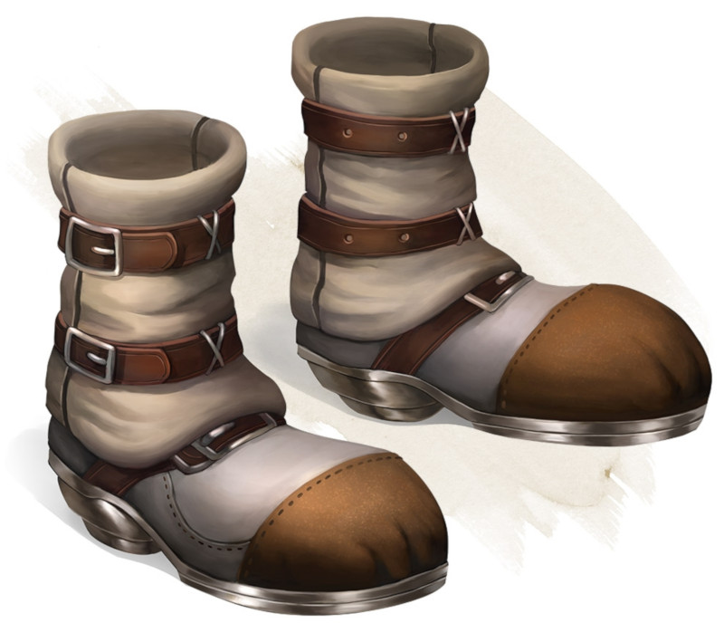

Bottes de sept lieues
Objet merveilleux, peu commun (nécessite un lien)
Lorsque vous portez ces bottes, votre vitesse de marche passe à 9 mètres, à moins qu'elle ne soit déjà supérieure à cela, et votre vitesse n'est pas réduite par le fait d'être encombré ou de porter une armure lourde. En outre, vous pouvez sauter trois fois la distance normale, bien que vous ne puissiez pas sauter plus loin que ce qu'il vous reste de mouvement le permet.
Dungeon Master´s Guide (SRD)
